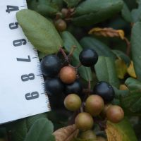
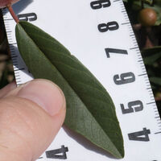
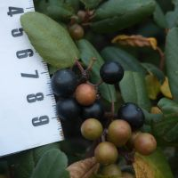
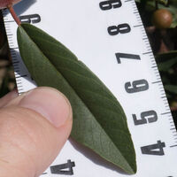

Frangula californica
Member of
false-buckthorns (genus Frangula)
buckthorn family (family Rhamnaceae)
dicots (class Magnoliopsida)
other colors in flowering plants
Except for historical records that I'm ignoring, there are no other wild species of this genus in the bay area.
There are no other wild members of this species in the bay area.

 

Hosts coffeeberry midrib gall moth (Sorhagenia nimbosus).
Jepson notes that “Frangula californica grows throughout most of California and the subspecies are somewhat separated geographically, but intermediates and variants in California exist between [almost] all the subspecies.” In my experience in the bay area, it is rare to find a plant that is clearly ssp. californica or ssp. tomentella, most having a mix of features. (Plus, the leaf tip is rarely acute for any of them, so maybe there’s another subspecies secretly mixed in.)
california coffeeberry
Frangula californica ssp. californica
Edibility: Raw ripe fruit is “just OK, sweet, a little figgy, not all that interesting”, but “the berries have at least some laxative effect” [source]. One commenter claims to have drunk 6 oz. at a time of juiced coffeeberry with no unpleasant side effects [source]. My friend says that the dark red ones taste sweeter than the black ones.
Toxicity of coffeeberry (Rhamnus californica):
3 – Ingestion of these plants is expected to cause nausea, vomiting, diarrhea and other symptoms that may cause illness but is not life-threatening.
1 observed taxon / 1 unobserved taxon / 1 key
Locations: Months: For more details, use advanced search.
Chris’s observations: 56 (51 are research grade)
Taxon info: iNaturalist – Calflora – CalPhotos – Jepson eFlora – FNA
Bay Area species: iNaturalist – Calflora

{kind=link}
{kind=link}
{kind=link}